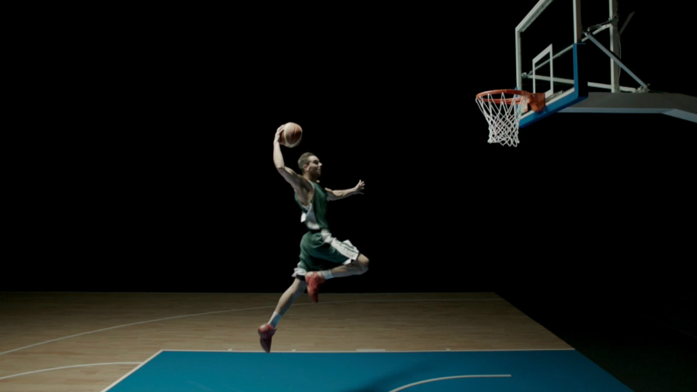

Basketbal, česky též košíková, je kolektivní míčový sport, ve kterém se dva týmy s pěti hráči na hřišti snaží získat co nejvíce bodů vhazováním míče do obroučky basketbalového koše a zabránit protihráčům, aby body získali. Hru vytvořil v roce 1891 Dr. James Naismith pro zpestření zimní sportovní přípravy svých studentů. I přes to, že se v původní podobě jednalo o nepříliš dynamický sport (pravidla neumožňovala pohyb s míčem), získal si brzy značnou popularitu a rychle se rozšířil nejen po Spojených státech. V roce 1932 byla založena Mezinárodní basketbalová federace (International Basketball Federation). V roce 1936 byl basketbal zařazen na pořad olympijských her a od roku 1976 se koná na OH i ženský basketbalový turnaj.
